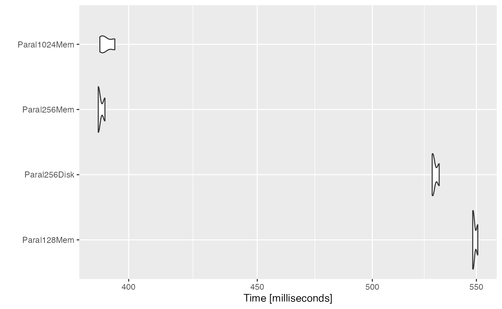
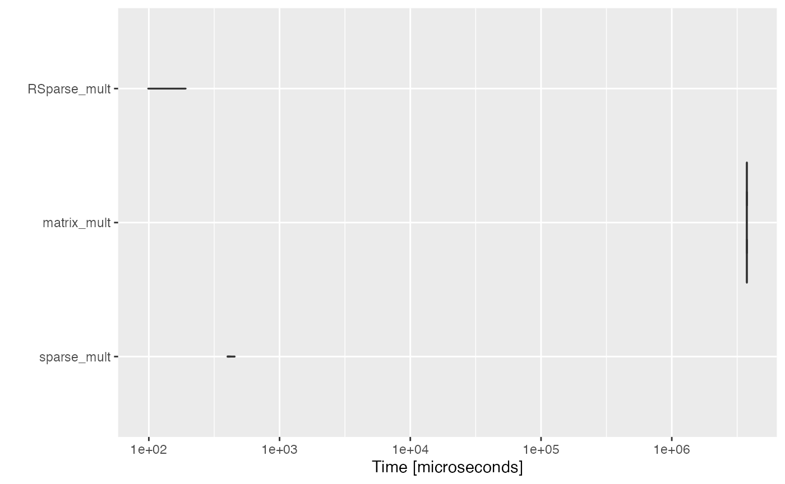
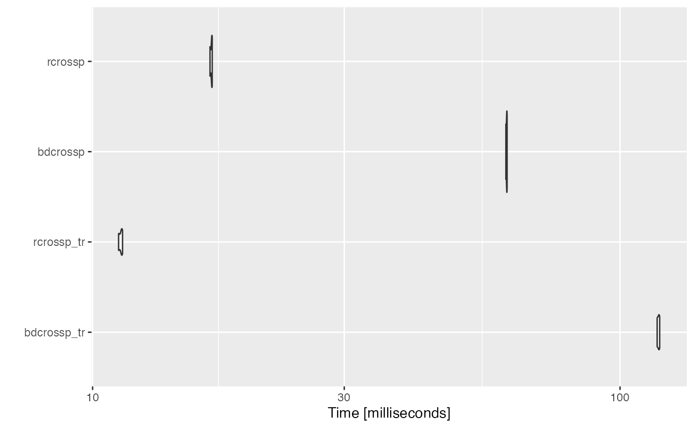
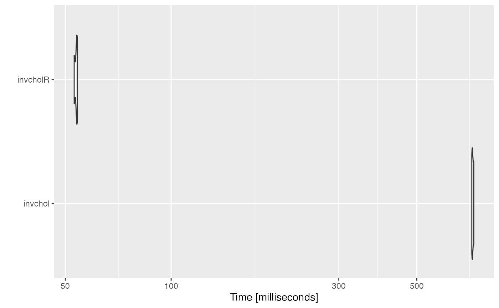
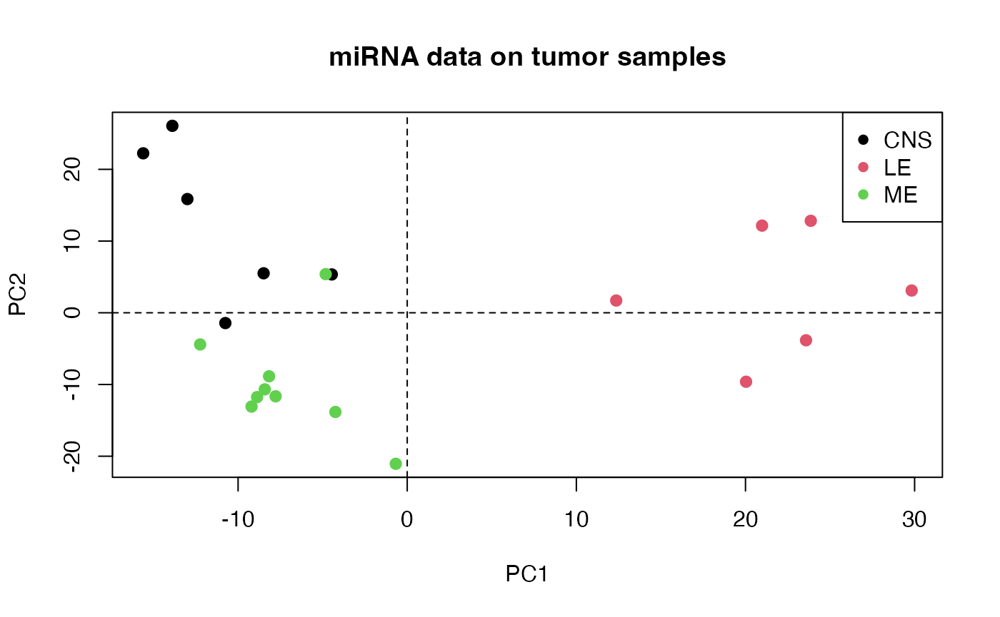
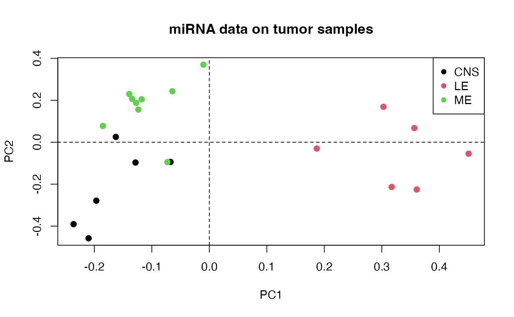

Matrix operations, algebra and Statistical Methods for Big Data. Part I: working in memory
Dolors Pelegri
Universitat de Barcelona - Universitat de Barcelona (UAB)ISGlobal, Centre for Research in Environmental Epidemiology (ISGlobal)Bioinformatics Research Group in Epidemiolgy (BRGE)Juan R. Gonzalez
Universitat de Barcelona - Universitat de Barcelona (UAB)ISGlobal, Centre for Research in Environmental Epidemiology (ISGlobal)Bioinformatics Research Group in Epidemiolgy (BRGE)juanr.gonzalez@isglobal.org
2022-10-25
BigDataStatMeth_memory.RmdAbstract
Description of functions to perform matrix operations, algebra and some basic statistical models using Matrix (CRAN) objects.
Overview
This package implements several matrix operations using
Matrix and DelayMatrix objects as well as HDF5
data files. Some basic algebra operations that can also be computed that
are useful to implement statistical analyses using standard
methodologies such as principal component analyses (PCA) or least
squares estimation. The package also contains specific statistical
methods mainly used in omic data analysis such as lasso
regression. All procedures referred to HDF5 can be found in BigDataStatMeth_hdf5
vignette.
Prerequisites
The package requires other packages from CRAN and
Bioconductor to be installed.
-
CRAN:Matrix,RcppEigenandRSpectra.
As the package can also deal with hdf5 files [See
Vignette BigDataStatMeth_hdf5],
these other packages are required: HDF5Array,
rhdf5. The user can execute this code to install the
required packages:
# Install BiocManager (if not previously installed)
install.packages("BiocManager")
# Install required packages
BiocManager::install(c("Matrix", "RcppEigen", "RSpectra", "DelayedArray",
"HDF5Array", "rhdf5"))Our package needs to be installed from source code. In such cases, a collection of software (e.g. C, C++, Fortran, etc.) are required, mainly for Windows users. These programs can be installed using Rtools.
Install package
Once required packages and Rtools are installed,
BigDataStatMeth package can be installed from our GitHub
repository as follows:
# Install devtools and load library (if not previously installed)
install.packages("devtools")
library(devtools)
# Install BigDataStatMeth
install_github("isglobal-brge/BigDataStatMeth")Getting started
First, let us start by loading the required packages to describe the main capabilities of the package
This packages is also required to reproduce this vignette
Matrix Multiplication
In this section, different products of matrices and vectors are introduced. The methods implement different strategies including block multiplication algorithms and the use of parallel implementations.
Block matrix multiplication
A block matrix or a partitioned matrix is a matrix that is interpreted as having been broken into sections called blocks or submatrices. Intuitively, a block matrix can be visualized as the original matrix with a collection of horizontal and vertical lines, which break it up, or partition it, into a collection of smaller matrices. the implementation has been made from the adaptation of the Fox algorithm [1].
\[A*B=\begin{pmatrix} {A}_{11}&{A}_{12} \\ {A}_{21}&{A}_{22}\end{pmatrix}*\begin{pmatrix}{B}_{11}&B_{12}\\B_{21}&B_{22}\end{pmatrix}=\begin{pmatrix}{C}_{11}&C_{12}\\C_{21}&C_{22}\end{pmatrix}=C\]
Let us simulate to set of matrices to illustrate the use of the function accross the entire documment. First, we simulate a simple case with to matrices A and B with dimensions 500x500 and 500x750, respectively. Second, another example with dimensions 1000x10000 are use to evaluate the performance in large matrices. The examples with big datasets will be illustrated using real data belonging to different omic settings. We can simulate to matrices with the desired dimensions by
# Define small matrix A and B
set.seed(123456)
n <- 500
p <- 750
A <- matrix(rnorm(n*n), nrow=n, ncol=n)
B <- matrix(rnorm(n*p), nrow=n, ncol=p)
# Define big matrix Abig and Bbig
n <- 100
p <- 10000
Abig <- matrix(rnorm(n*n), nrow=n, ncol=n)
Bbig <- matrix(rnorm(n*p), nrow=n, ncol=p)Matrix multiplication using block matrices is implemented in the
bdblockmult() function. It only requires to setting the
argument block_size, by default
block_size = 128. An optimal block size is important to
better performance but it is difficult to asses what is the optimum
block size for each matrix.
# Use 10x10 blocks
AxB <- bdblockmult(A, B, block_size = 10)As expected the results obtained using this procedure are the correct ones
all.equal(AxB, A%*%B)
[1] TRUENote that when the argument block_size is larger than
any of the dimensions of matrix A or B the blocks_size is
set to min(cols(A), rows(A), cols(B), rows(B)).
The process can be speed up by making computations in parallel using
paral=TRUE an optional parameter threads can be used to
indicate the number of threads to launch simultaneously, if
threads=NULL the function takes the available threads - 1,
leaving one available for user.
AxB <- bdblockmult(A, B, block_size = 10, paral = TRUE)
all.equal(AxB,A%*%B)
[1] TRUETo work with big matrices bdblockmult() can save
matrices in hdf5 file format in order to be able to operate with them in
blocks and not overload the memory, by default are considered large
matrices if the number of rows or columns is greater than 5000, but it
can be changed with bigmatrix argument. Or we can also
force to execute the matrix multiplication with data on memory setting
the parameter onmemory = TRUE
# We want to force it to run in memory
AxBNOBig <- bdblockmult(Abig, Bbig, onmemory = TRUE)
# Run matrix multiplication with data on memory using submatrices of 256x256
AxBBig3000 <- bdblockmult(Abig, Bbig, block_size = 256 , onmemory = TRUE)Here, we compare the performance of the block method with the different options.
bench1 <- microbenchmark(
# Parallel block size = 128
Paral128Mem = bdblockmult(Abig, Bbig, paral = TRUE),
# On disk parallel block size = 256
Paral256Disk = bdblockmult(Abig, Bbig, block_size=256, paral=TRUE),
Paral256Mem = bdblockmult(Abig, Bbig, block_size=256,
paral=TRUE, onmemory=TRUE),
Paral1024Mem = bdblockmult(Abig, Bbig, block_size=1024,
paral=TRUE, onmemory=TRUE), times = 3 )
Warning in microbenchmark(Paral128Mem = bdblockmult(Abig, Bbig, paral = TRUE), :
less accurate nanosecond times to avoid potential integer overflows
bench1
Unit: milliseconds
expr min lq mean median uq max neval
Paral128Mem 548.1470 548.3064 549.1037 548.4658 549.5820 550.6982 3
Paral256Disk 528.1665 528.4058 529.4617 528.6451 530.1093 531.5735 3
Paral256Mem 389.0148 389.0231 389.8172 389.0315 390.2184 391.4053 3
Paral1024Mem 389.5812 390.4802 391.9731 391.3792 393.1691 394.9591 3We can observe that the shortest execution time is achieved with
block_size = 256. The same information is depicted in the
next Figure which illustrates the comparison between the different
assessed methods
ggplot2::autoplot(bench1)
Sparse matrix multiplication
A sparse matrix or sparse array is a matrix in which most of the
elements are zero. BigDataStatMeth allows to perform matrix
multiplication with sparse matrices using the function
bdblockmult_sparse. It is necessary that at least one of
the the two matrices is defined as sparse in R using
dgCMatrix class. An example of a sparse matrix could be
:
\[\begin{equation} \begin{bmatrix} a_{11}&a_{12} & 0 & \cdots & \cdots & \cdots & \cdots & 0 \\ a_{21} & a_{22} & a_{23} & \ddots & && & \vdots \\ 0 & a_{32} & a_{33} & a_{34} & \ddots & & & \vdots \\ \vdots & \ddots & \ddots & \ddots & \ddots & \ddots & & \vdots \\ \vdots & & \ddots & \ddots & \ddots & \ddots & \ddots& \vdots\\ \vdots & & & & \ddots & a_{n-1,n-2} & a_{n-1,n-1} & a_{n-1,n}\\ 0 & \cdots & \cdots & \cdots & \cdots & 0 & a_{n,n-1} & a_{n,n} \\ \end{bmatrix} \end{equation}\]
k <- 1e3
# Generate 2 sparse matrix x_sparse and y_sparse
set.seed(1)
x_sparse <- sparseMatrix(
i = sample(x = k, size = k),
j = sample(x = k, size = k),
x = rnorm(n = k)
)
set.seed(2)
y_sparse <- sparseMatrix(
i = sample(x = k, size = k),
j = sample(x = k, size = k),
x = rnorm(n = k)
)
d <- bdblockmult_sparse(x_sparse, y_sparse)
f <- x_sparse%*%y_sparse
all.equal(d,f)
[1] TRUEHere, we compare the performace using sparse matrix multiplication with sparse matrices and the blockmult multiplication with the same matrices not declared as sparce.
res <- microbenchmark(
sparse_mult = bdblockmult_sparse(x_sparse, y_sparse),
matrix_mult = bdblockmult(as.matrix(x_sparse), as.matrix(y_sparse)),
RSparse_mult = x_sparse%*% y_sparse,
times = 3 )
res
Unit: microseconds
expr min lq mean median uq
sparse_mult 399.094 406.392 422.3137 413.690 433.9235
matrix_mult 3749933.841 3751146.006 3751611.1100 3752358.171 3752449.7445
RSparse_mult 98.687 100.122 130.6807 101.557 146.6775
max neval
454.157 3
3752541.318 3
191.798 3The same information is depicted in the next Figure which illustrates the comparison between the different assessed methods
ggplot2::autoplot(res)
We can observe the huge difference in execution time
Cross-product and Transposed Cross-product
To perform a cross-product and tcrossproduct with BigDataStatMeth we
use the same function bdcrossprod() setting parameter
transposed to TRUE or FALSE. Like other functions
implemented in BigDataStatMeth, we can work with R Objects. Setting
parameter transposed for Crossproduct and tCrossProduct
if
transposed = FALSE(default), we perform a Crossproduct \[\left( C \right) ={ \left( A \right) }^{ t }\left( A \right) \]if
transposed = TRUE: we perform a transposed-Crossproduct \[\left( C \right) = \left( A \right){ \left( A \right) }^{ t } \]
Here we shown some examples using bdcrossprod
function
n <- 500
m <- 250
A <- matrix(rnorm(n*m), nrow=n, ncol=m)
# Cross Product of a standard R matrix
cpA <- bdCrossprod(A)We obtain the expected values computed using crossprod R
function
all.equal(cpA, crossprod(A))
[1] TRUEyou may also set transposed=TRUE
# Transposed Cross Product R matrices
tcpA <- bdtCrossprod(A)We obtain the expected values computed using tcrossprod
function
all.equal(tcpA, tcrossprod(A))
[1] TRUEWe can show that the implemented version really improves the R implementation computational speed.
res <- microbenchmark(
bdcrossp_tr = bdtCrossprod(A),
rcrossp_tr = tcrossprod(A),
bdcrossp = bdCrossprod(A),
rcrossp = crossprod(A),
times = 3)
res
Unit: milliseconds
expr min lq mean median uq max neval
bdcrossp_tr 117.58673 117.94007 118.25976 118.29341 118.59627 118.89914 3
rcrossp_tr 11.20136 11.26596 11.30939 11.33056 11.36340 11.39624 3
bdcrossp 60.74876 60.85232 60.92720 60.95589 61.01643 61.07696 3
rcrossp 16.69590 16.75650 16.78976 16.81709 16.83669 16.85629 3
ggplot2::autoplot(res)
Matrix Vector Multiplication
You can perform a weighted cross-product \(C = X^ t w X\) with
bdwcrossprod() given a matrix X as argument and a vector or
matrix of weights, w.
Weighted Cross-product and Weighted Transposed Cross-product
n <- 250
X <- matrix(rnorm(n*n), nrow=n, ncol=n)
u <- runif(n)
w <- u * (1 - u)
wcpX <- bdwproduct(X, w,"xwxt")
wcpX[1:5,1:5]
[,1] [,2] [,3] [,4] [,5]
[1,] 41.8137240 4.0688017 -3.5551601 -0.9590417 -3.649829
[2,] 4.0688017 35.8957169 0.4522855 -3.6490462 3.866538
[3,] -3.5551601 0.4522855 44.5225035 2.3956115 5.998364
[4,] -0.9590417 -3.6490462 2.3956115 36.3507446 -2.287474
[5,] -3.6498289 3.8665378 5.9983636 -2.2874736 42.947037Those are the expected values as it is indicated by executing:
all.equal( wcpX, X%*%diag(w)%*%t(X) )
[1] TRUEWeighted Transposed Cross Product
With argument transposed=TRUE, we can perform a
transposed weighted cross-product \(C = A w
A^t\)
wtcpX <- bdwproduct(X, w,"xtwx")
wtcpX[1:5,1:5]
[,1] [,2] [,3] [,4] [,5]
[1,] 44.319669 4.02108694 -3.006229 -1.85345133 -3.786994
[2,] 4.021087 38.82933816 -3.638959 -0.03011039 -3.451078
[3,] -3.006229 -3.63895884 47.303628 -3.16577769 2.629315
[4,] -1.853451 -0.03011039 -3.165778 40.87522997 2.700950
[5,] -3.786994 -3.45107802 2.629315 2.70094954 41.088084Those are the expected values as it is indicated by executing:
all.equal(wtcpX, t(X)%*%diag(w)%*%X)
[1] TRUEInverse Cholesky
The Cholesky factorization is widely used for solving a system of linear equations whose coefficient matrix is symmetric and positive definite.
\[A = LL^t = U^tU\]
where \(L\) is a lower triangular
matrix and U is an upper triangular matrix. To get the Inverse Cholesky
we can use the function bdInvCholesky(). Let us start by
illustrating how to do this computations in a simulated data:
# Generate a positive definite matrix
Posdef <- function (n, ev = runif(n, 0, 10))
{
Z <- matrix(ncol=n, rnorm(n^2))
decomp <- qr(Z)
Q <- qr.Q(decomp)
R <- qr.R(decomp)
d <- diag(R)
ph <- d / abs(d)
O <- Q %*% diag(ph)
Z <- t(O) %*% diag(ev) %*% O
return(Z)
}
A <- Posdef(n = 500, ev = 1:500)
invchol <- bdInvCholesky(A)
round(invchol[1:5,1:5],8)
[,1] [,2] [,3] [,4] [,5]
[1,] 0.01068322 -0.00063371 -0.00104697 0.00230612 -0.00173745
[2,] -0.00063371 0.00845418 0.00029448 -0.00104800 0.00020868
[3,] -0.00104697 0.00029448 0.00878553 -0.00074755 0.00006907
[4,] 0.00230612 -0.00104800 -0.00074755 0.02041952 0.00020405
[5,] -0.00173745 0.00020868 0.00006907 0.00020405 0.01137916We can check whether this function returns the expected values
obtained with the standard R function solve:
all.equal(invchol, solve(A))
[1] TRUEWe can show that the implemented version really improves the R implementation computational speed.
res <- microbenchmark(invchol = bdInvCholesky(A),
invcholR = solve(A),
times = 3)
res
Unit: milliseconds
expr min lq mean median uq max neval
invchol 717.0209 718.93808 721.40196 720.85523 723.59248 726.32972 3
invcholR 52.9793 53.40533 53.62033 53.83136 53.94085 54.05034 3
ggplot2::autoplot(res)
Pseudo-Inverse
The Moore-Penrose pseudoinverse is a direct application of the SVD.
The inverse of a matrix A can be used to solve the equation \({Ax}={b}\). But in the case where the set
of equations have 0 or many solutions the inverse cannot be found and
the equation cannot be solved. The following formula is used to find the
pseudoinverse: \[{A}^+= {VD}^+{U}^T\]
In BigDataStatMeth we implemented Moore-Penrose pseudoinverse in
function bdpseudoinv, now we get the pseudoinverse from a
simulated data
m <- 800
n <- 700
A <- matrix(rnorm(n*m), nrow=n, ncol=m)
pseudoinv <- bdpseudoinv(A)
zapsmall(pseudoinv)[1:5,1:5]
[,1] [,2] [,3] [,4] [,5]
[1,] -0.007071901 -0.000193207 -0.004785558 0.000175308 -0.002338808
[2,] -0.003226277 0.003972747 0.006872109 0.001231256 -0.004644404
[3,] -0.009594353 0.006160482 -0.004336592 -0.001425284 0.001542341
[4,] 0.004479327 0.000841558 0.001757631 -0.004109301 0.007519060
[5,] -0.000418443 -0.001207001 0.003596909 0.006295424 -0.001892957QR Factorization
QR decomposition, also known as a QR factorization or QU factorization is a decomposition of a matrix A into a product : \[A = QR\] of an orthogonal matrix Q and an upper triangular matrix R. QR decomposition is often used to solve the linear least squares problems.
In BigDataStatMeth we implemented QR decomposition in function
bdQR, the QR decomposition can be performed in R objects.
To show how to use this function we performa a QR decomposition from the
previous simulated data in matrix A.
QR_A <- bdQR(A)
QR_R <- qr(A)
# Show results for Q
zapsmall(QR_A$Q[1:5,1:5])
[,1] [,2] [,3] [,4] [,5]
[1,] -0.09751413 0.05476439 -0.06324176 0.00402516 0.01736904
[2,] 0.01408272 -0.03307061 -0.00410891 -0.01779408 0.09215147
[3,] -0.05313533 -0.05819508 -0.03771256 0.01765984 -0.05703391
[4,] -0.04576630 -0.01599696 -0.00297678 -0.01702504 -0.01524199
[5,] -0.01079994 0.01674268 0.00374898 -0.01934687 -0.04035167
# Show results for R
zapsmall(QR_A$R[1:5,1:5])
[,1] [,2] [,3] [,4] [,5]
[1,] 25.85659 0.431968 0.048283 1.880904 0.253994
[2,] 0.00000 -27.514698 2.341086 0.189451 -0.667984
[3,] 0.00000 0.000000 26.936966 -0.471915 0.065189
[4,] 0.00000 0.000000 0.000000 26.732846 1.240861
[5,] 0.00000 0.000000 0.000000 0.000000 -25.773455
# Test Q
all.equal(QR_A$Q, qr.Q(QR_R), check.attributes=FALSE)
[1] TRUESolve matrix equation
In BigDataStatMeth we implemented the function bdSolve
that computes the solution to a real system of linear equations
\[A*X = B\] where A is an N-by-N matrix and X and B are N-by-K matrices.
Here we solve a matrix equation with a squared matrix A (1000 by 1000) and B matrix (1000 by 2)
# Simulate data
m <- 1000
n <- 1000
A <- matrix(runif(n*m), nrow = n, ncol = m)
B <- matrix(runif(n*2), nrow = n)
# Solve matrix equation
X <- bdSolve(A, B)
# Show results
X[1:5,]
[,1] [,2]
[1,] 11.739756 8.287620
[2,] 13.687967 11.358812
[3,] 3.495741 1.990773
[4,] -16.500408 -10.906902
[5,] -7.406204 -5.414059Now we check results multiplying matrix A by results X, if all is correct \(A*X = B\)
testB <- bdblockmult(A,X)
B[1:5,]
[,1] [,2]
[1,] 0.9572424 0.3966286
[2,] 0.4503205 0.9293827
[3,] 0.3437463 0.7550047
[4,] 0.4054374 0.6855674
[5,] 0.7638437 0.7139061
testB[1:5,]
[,1] [,2]
[1,] 0.9572424 0.3966286
[2,] 0.4503205 0.9293827
[3,] 0.3437463 0.7550047
[4,] 0.4054374 0.6855674
[5,] 0.7638437 0.7139061
all.equal(B, testB)
[1] TRUESingular Value Decomposition (SVD)
The SVD of an \(m \times n\) real or complex matrix \(A\) is a factorization of the form:
\[U\Sigma { V }^{ T }\]
where :
-\(U\) is a \(m \times m\) real or complex unitary matrix -\(\Sigma\) is a \(m \times n\) rectangular diagonal matrix with non-negative real numbers on the diagonal -\(V\) is a \(n \times n\) real or complex unitary matrix.
Notice that:
- The diagonal entries \(\sigma_i\) of \(\Sigma\) are known as the singular values of \(A\).
- The columns of \(U\) are called the left-singular vectors of \(A\).
- The columns of \(V\) are called the right-singular vectors of \(A\).
Simple Singular Values Decomposition
He have implemented the SVD for R matrices in the function
bdSVD(). The method, so far, only allows SVD of real
matrices \(A\). This code illustrate
how to perform such computations:
# Matrix simulation
set.seed(413)
n <- 500
A <- matrix(rnorm(n*n), nrow=n, ncol=n)
# SVD
bsvd <- bdSVD(A)
# Singular values, and right and left singular vectors
bsvd$d[1:5]
[1] 44.27037 43.95609 43.31037 43.01980 42.81728
bsvd$u[1:5,1:5]
[,1] [,2] [,3] [,4] [,5]
[1,] 0.028712445 0.10169472 0.019783036 0.032804622 -0.048915416
[2,] 0.001193891 0.02296487 0.009024529 0.059683600 0.027888834
[3,] -0.008878497 -0.02414059 -0.006035909 -0.004867886 0.024570252
[4,] 0.037323916 -0.04675198 0.035928628 -0.021097593 -0.073485962
[5,] -0.054073083 0.04382626 -0.009027050 -0.002269443 -0.003071978
bsvd$v[1:5,1:5]
[,1] [,2] [,3] [,4] [,5]
[1,] -0.07105335 0.04554495 -0.03850442 0.07270812 0.078124410
[2,] 0.05989691 -0.02957792 -0.07508850 -0.01171385 0.001581823
[3,] -0.00200688 -0.04179449 0.02798939 -0.05686766 -0.073573833
[4,] -0.01284403 -0.05024617 -0.09038993 -0.05725360 0.023632656
[5,] -0.01751359 0.07320492 -0.02120536 -0.02397367 -0.067643671We get the expected results obtained with standard R functions:
all.equal( sqrt( svd( tcrossprod( scale(A) ) )$d[1:10] ), bsvd$d[1:10] )
[1] TRUEyou get the \(\sigma_i\), \(U\) and \(V\) of normalized matrix \(A\), if you want to perform the SVD from
not normalized matrix \(A\) then you
have to set the parameter bcenter = false and
bscale = false.
bsvd <- bdSVD(A, bcenter = FALSE, bscale = FALSE)
bsvd$d[1:5]
[1] 44.44007 43.89640 43.38384 43.23563 42.82658
bsvd$u[1:5,1:5]
[,1] [,2] [,3] [,4] [,5]
[1,] 3.075740e-02 0.09861737 -0.026705796 0.001569226 -0.04384078
[2,] 6.480471e-05 0.04151230 -0.049215808 0.054763599 -0.01436232
[3,] -1.857597e-02 -0.02463540 -0.001246071 0.015838141 0.05725309
[4,] 3.555600e-02 -0.05715730 -0.009596880 -0.040247700 -0.03888504
[5,] -5.290501e-02 0.04784627 -0.006624289 0.010168748 0.01934154
bsvd$v[1:5,1:5]
[,1] [,2] [,3] [,4] [,5]
[1,] -0.0677291931 0.03646765 -0.072013679 -0.06460296 0.03834539
[2,] 0.0558086446 -0.02816709 -0.067619533 0.02478961 0.01316491
[3,] 0.0024305441 -0.04679000 0.064115513 0.04134591 -0.03519768
[4,] -0.0007861777 -0.06602592 -0.062833191 0.06307396 0.03651487
[5,] -0.0165396063 0.07316212 0.002600021 0.07030477 -0.07916813
all.equal( sqrt(svd(tcrossprod(A))$d[1:10]), bsvd$d[1:10] )
[1] TRUEBlock Singular Values Decomposition
A method developed by M. A. Iwen and B. W. Ong uses a distributed and incremental SVD algorithm that is useful for agglomerative data analysis on large networks. The algorithm calculates the singular values and left singular vectors of a matrix A, by first, partitioning it by columns. This creates a set of submatrices of A with the same number of rows, but only some of its columns. After that, the SVD of each of the submatrices is computed. The final step consists of combining the results obtained by merging them again and computing the SVD of the resulting matrix.
This approach is only implemented using HDF5 files. This method is
implemented in bdSVD_hdf5 function, this function works
directly on hdf5 data format, loading in memory only the data to perform
calculations and saving the results again in the hdf5 file for later
use. The user is referred to read section
7.3.1 from this vignette.
Using algebra procedure to implement basic statistical methods
Principal component analysis (PCA)
Let us illustrate how to perform a PCA using miRNA data obtained from
TCGA corresponding to 3 different tumors: melanoma (ME), leukemia (LEU)
and centran nervous system (CNS). Data is available at
BigDataStatMeth and can be loaded by simply:
data(miRNA)
data(cancer)
dim(miRNA)
[1] 21 537We observe that there are a total of 21 individuals and 537 miRNAs.
The vector cancer contains the type of tumor of each
individual. For each type we have:
table(cancer)
cancer
CNS LE ME
6 6 9 Now, the typical principal component analysis on the samples can be
run on the miRNA matrix since it has miRNAs in columns and
individuals in rows
pc <- prcomp(miRNA)We can plot the two first components with:
plot(pc$x[, 1], pc$x[, 2],
main = "miRNA data on tumor samples",
xlab = "PC1", ylab = "PC2", type="n")
abline(h=0, v=0, lty=2)
points(pc$x[, 1], pc$x[, 2], col = cancer,
pch=16, cex=1.2)
legend("topright", levels(cancer), pch=16, col=1:3)
The PCA is equivalent to performing the SVD on the centered data,
where the centering occurs on the columns. In that case the function
bdSVD requires to set the argument bcenter and
bscale equal to TRUE, the dafault values.
miRNA.c <- sweep(miRNA, 2, colMeans(miRNA), "-")
svd.da <- bdSVD(miRNA.c, bcenter = FALSE, bscale = FALSE)The PCA plot for the two principal components can then be be obtained by:
plot(svd.da$u[, 1], svd.da$u[, 2],
main = "miRNA data on tumor samples",
xlab = "PC1", ylab = "PC2", type="n")
abline(h=0, v=0, lty=2)
points(svd.da$u[, 1], svd.da$u[, 2], col = cancer,
pch=16, cex=1.2)
legend("topright", levels(cancer), pch=16, col=1:3)
We can observe that both figures are equal irrespective to a sign change of second component (that can happen in SVD).
Session information
sessionInfo()
R version 4.2.1 (2022-06-23)
Platform: aarch64-apple-darwin20 (64-bit)
Running under: macOS Monterey 12.5
Matrix products: default
BLAS: /Library/Frameworks/R.framework/Versions/4.2-arm64/Resources/lib/libRblas.0.dylib
LAPACK: /Library/Frameworks/R.framework/Versions/4.2-arm64/Resources/lib/libRlapack.dylib
locale:
[1] ca_ES.UTF-8/ca_ES.UTF-8/ca_ES.UTF-8/C/ca_ES.UTF-8/ca_ES.UTF-8
attached base packages:
[1] stats graphics grDevices utils datasets methods base
other attached packages:
[1] microbenchmark_1.4.9 ggplot2_3.3.6 BigDataStatMeth_0.99.50
[4] Matrix_1.5-1 rmarkdown_2.17 knitr_1.40
[7] BiocStyle_2.24.0
loaded via a namespace (and not attached):
[1] xfun_0.33 bslib_0.4.0 purrr_0.3.5
[4] lattice_0.20-45 rhdf5_2.40.0 colorspace_2.0-3
[7] vctrs_0.4.2 htmltools_0.5.3 yaml_2.3.5
[10] utf8_1.2.2 rlang_1.0.6 pkgdown_2.0.6
[13] jquerylib_0.1.4 pillar_1.8.1 withr_2.5.0
[16] glue_1.6.2 lifecycle_1.0.3 stringr_1.4.1
[19] munsell_0.5.0 gtable_0.3.1 ragg_1.2.3
[22] memoise_2.0.1 evaluate_0.17 labeling_0.4.2
[25] fastmap_1.1.0 fansi_1.0.3 highr_0.9
[28] Rcpp_1.0.9 scales_1.2.1 BiocManager_1.30.18
[31] cachem_1.0.6 desc_1.4.2 RcppParallel_5.1.5
[34] jsonlite_1.8.2 farver_2.1.1 systemfonts_1.0.4
[37] fs_1.5.2 textshaping_0.3.6 digest_0.6.29
[40] stringi_1.7.8 bookdown_0.29 grid_4.2.1
[43] rprojroot_2.0.3 cli_3.4.1 tools_4.2.1
[46] bitops_1.0-7 rhdf5filters_1.8.0 magrittr_2.0.3
[49] sass_0.4.2 RCurl_1.98-1.9 tibble_3.1.8
[52] pkgconfig_2.0.3 data.table_1.14.2 rstudioapi_0.14
[55] Rhdf5lib_1.18.2 R6_2.5.1 compiler_4.2.1